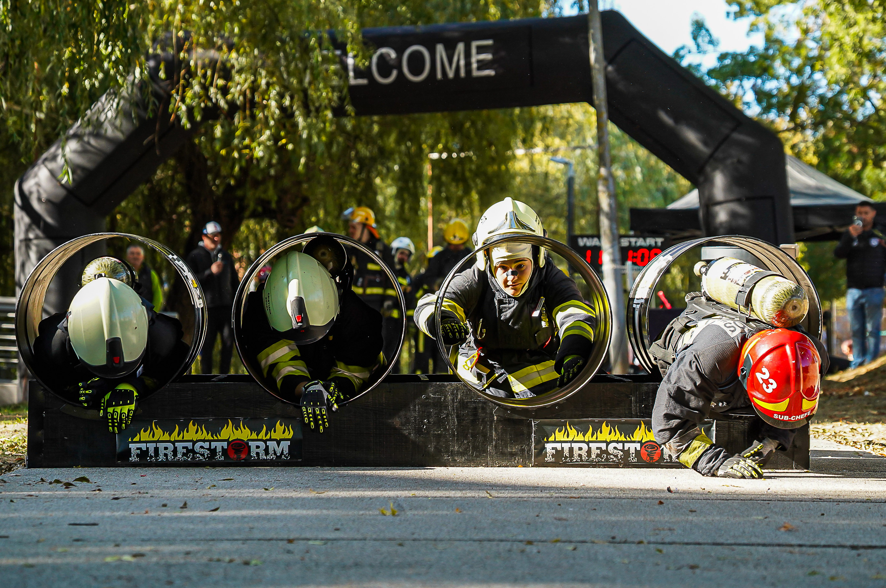
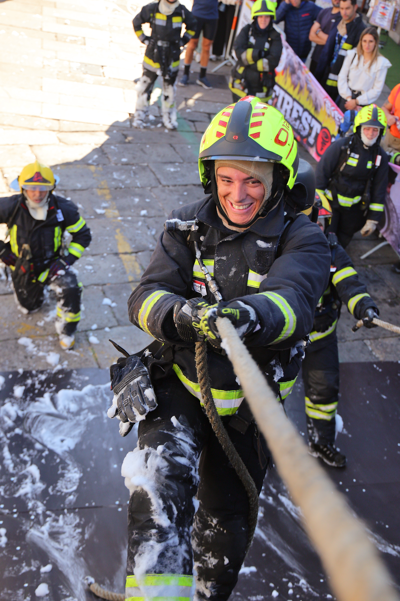

Viseu hosted the third Firestorm Challenge on 24 October 2026, an obstacle competition organised by the Associação Humanitária dos Bombeiros Voluntários de Viseu. Firefighters and civilian entrants faced the same central objective: complete the course and every obstacle in the shortest possible time.
The official regulations placed the start at Largo do Viseu Arena and the finish at Largo da Sé. The approximately one-kilometre climb reached a maximum gradient of 12 per cent, with firefighters completing it in full structural protective equipment and carrying an open-circuit breathing apparatus.
A course built around firefighting demands
The nine-obstacle sequence included tunnels, a stone wall, the traditional firefighter ladder for operational entrants, hose work, an extinguisher carry, a foam tank and a final ramp. Groups of four started at four-minute intervals from 09:00, with the firefighters’ competition followed by the civilian field.

Image Media’s photographs show both sides of the event: the concentration demanded by the obstacles and the relief shared after the course. One frame follows competitors through the circular tunnels; another captures a firefighter smiling as he works a rope amid the foam.

Competition and camaraderie
The event also brought together firefighters from different corporations. Pedro Garcia, chief of the Bombeiros Voluntários de Oliveira do Hospital, won the men’s 50–59 category, while his corporation fielded nine participants. Their presence underlined the mix of competition, professional preparation and shared experience at the heart of the challenge.
Iranildo Seabra, Fran Paulino, Leandro Rocha, Luciano Inocencio, Pedro Oliveira, Raul Godoy and Liane Ferreira formed the Image Media coverage team. The three photographs selected for this report are credited individually from the supplied filenames.
Image Media coverage
Reporting: IM News Editorial Desk
Coverage photographers: Iranildo Seabra, Fran Paulino, Leandro Rocha, Luciano Inocencio, Pedro Oliveira, Raul Godoy and Liane Ferreira / Image Media
Sources: official Firestorm Challenge regulations and verified local reporting.